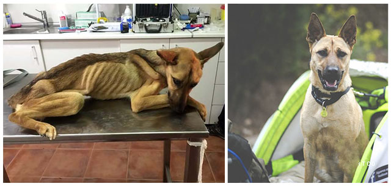

Saved Dog That Was In The Bones Transforms Remarkably

Barilla, a stray dog rescued from the streets, was featured in a film by the Spanish not-for-profit Dog Home Pet Shelter.
We can observe the tremendous metamorphosis of this canine, who is now rather pleased, in the same video. Barilla was so weak and starved when she got to the shelter in Granada, Spain, that her bones were visible via her skin and her interior organs were on the verge of failing. The shelter’s owner, Eduardo Rodriguez, was identified to conserve her.
Edward stated,” “I’ve been rescuing dogs since I was a youngster, and I’m used to seeing them in awful health, but Barilla was the worst I have actually ever before seen.” She had actually been without water or nourishment for as long that she could only relocate her head and tail when we saved her “.
Edward stated,” “His progress has been incredible. Many regular pets would certainly have died, the vet informed us several times. We are now intertwined. I notified my coworkers the first day I met her that I was going to stay with her, and that has been the case since.